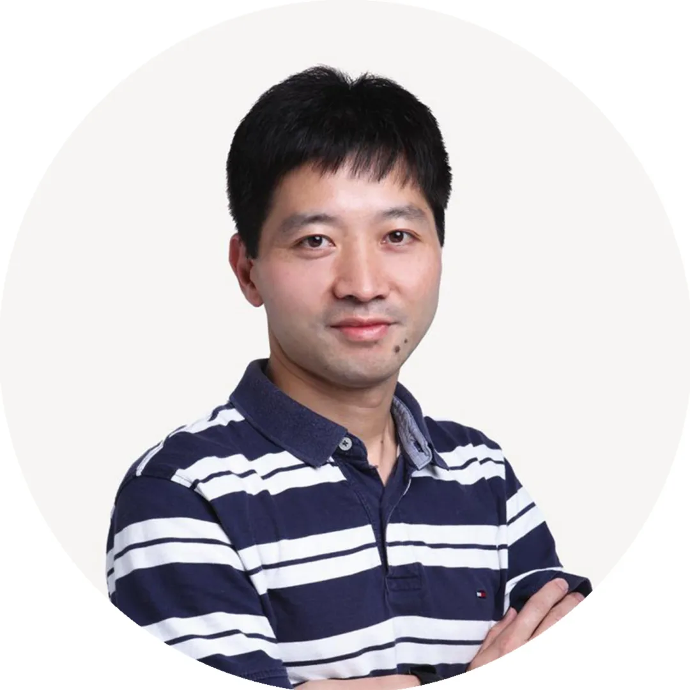

现从事云原生与 AI Infra 创业孵化与投资，曾任高瓴运营合伙人、滴滴出行高级副总裁、阿里云 CTO 等职位。1998 年创立 LVS 开源项目，长期推动国内开源生态建设，拥有大规模系统设计与软件研发管理经验。
关于我们
开源私董会倡导“开源式共创”的私董会实践：议题透明、经验可复用、行动可追踪。我们邀请 各行业的实践者带着真实问题加入，在结构化流程中获得同伴支持、专家引导和持续复盘。
只讨论正在发生的问题，让时间投入产生业务价值。
使用开源的私董会议程、角色与工具，确保效率与公平。
以行动计划为输出，结合共创伙伴的监督与复盘机制。
专家阵容
现从事云原生与 AI Infra 创业孵化与投资，曾任高瓴运营合伙人、滴滴出行高级副总裁、阿里云 CTO 等职位。1998 年创立 LVS 开源项目，长期推动国内开源生态建设，拥有大规模系统设计与软件研发管理经验。
CSDN 创始人、董事长 · 中国开源联盟副主席 · 开放原子开源基金会理事
三十余年软件与互联网创业者，持续建设 CSDN、程序员杂志、GitCode 等开发者平台，覆盖 5100 万用户。 发起 GOSIM 全球开源创新汇、“1024 中国程序员节”等活动，并投资 90 余家科技企业，推动开源产业化。
专注于具有中国特色的 AI 开源治理与运营研究，曾任职中海油、中国信科集团、中国船舶集团等机构。 研究方向为工业大数据与 AI 机器人融合技术，推动开源合规治理实践落地。
资深连续创业者与开源社区贡献者，曾共同发起开源中间件社区 huihoo.org，主导 JFox 应用服务器。 持续推动国际开源活动在中国落地，并促进中欧开源创新与创业合作。
2024 年 CCF 杰出工程师奖获得者，拥有海外移动互联网研发背景。2017 年创办涛思数据，打造 AI 原生工业数据管理平台，推动 TDengine 在全球开源社区的影响力。
若伴科技创始人、CEO · CCF开源发展技术委员会常务委员 · 中关村数智人工智能产业联盟理事长
曾任小米集团副总裁，先后在 IBM、雅虎、LinkedIn 等企业任职，拥有超过三十年的开源实践经验。 在小米推动“云计算-大数据-人工智能”技术路线，培养大量开源人才。
开源布道者与资深软件架构师，曾长期任职华为，负责 DevOps 及开发者生态建设。 致力于开源经济学、生态与供应链安全研究，多次获得中国开源优秀人物荣誉。
协作原则
议题库、方法论与工具公开共享，降低学习门槛。
成员实名、承诺保密，保证讨论深度与安全感。
鼓励跨界协作，每一次共创都沉淀为可复用资产。
每次会议必须产出行动计划，并进行跟踪复盘。
活动与议题
聚焦3-5位成员的关键问题，采用主持人+同侪挑战的深度流程。
围绕战略、产品、组织与AI应用进行专项训练，形成实践模板。
所有议题以结构化模板沉淀，支持公开引用与二次共创。
开源行动
议题模板、会议流程、主持人手册、行动复盘表等核心资产全部开源。
成员可以提交议题与案例，社区合并后将自动署名并进入公共库。
由核心维护者、主题维护者与贡献者共同治理，公开决策与路线图。
加入我们
如果你愿意一起共建开放的私董会生态，欢迎联系我们。